chapter4 处理器
这章主要分为两部分，第一部分是单周期cpu为了执行指令，如何构建DataPath。第二部分是如何用流水线提升性能
1 总览
学习 CPU 的构造，最核心的切入点就是数据通路 (Datapath)。如果把 CPU 比作一个工厂，数据通路就是生产线上的传送带和加工机器，而控制信号 (Control Signals) 就是指挥中心发出的调度指令。
在 RISC-V 架构中，一个基础的单周期 CPU 数据通路主要由以下几个部分组成：
数据通路的核心组件
数据通路是指指令执行过程中，数据所流经的路径及处理单元。
- 程序计数器 (PC, Program Counter)：
一个寄存器，存放当前正在执行指令的地址。
- 指令存储器 (Instruction Memory)：
根据 PC 提供的地址，读出对应的指令机器码。
- 寄存器堆 (Register File)：
包含 x0~x31 寄存器。它有两个读端口和一个写端口，负责存放运算的操作数和中间结果。
- 立即数生成单元 (Imm Gen)：
负责将指令中分散的立即数位（如 addi 中的 12 位）提取并扩展成 32 位或 64 位。
- 算术逻辑单元 (ALU)：
数据通路的核心加工厂，负责执行加、减、与、或等实际运算。
- 数据存储器 (Data Memory)：
用于执行访存指令（如 lw, sw），读写内存中的数据。
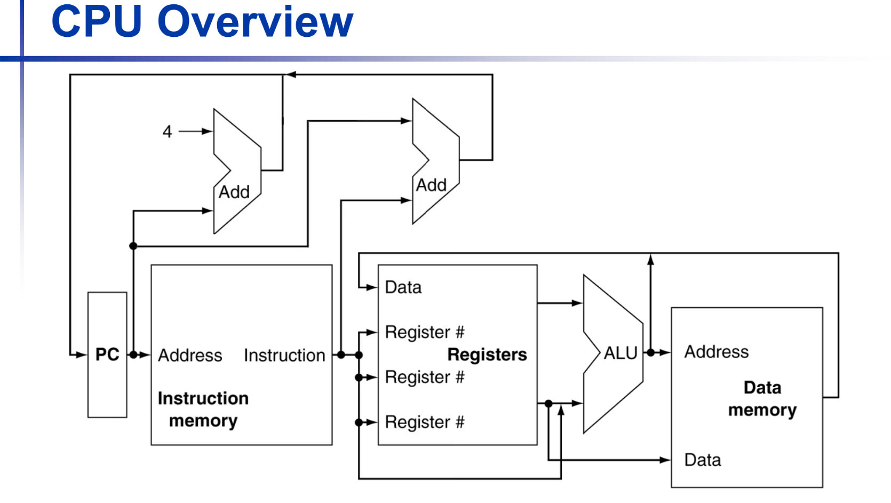
什么是控制信号？
控制信号是控制单元 (Control Unit) 根据指令的 Opcode (操作码) 和 Funct (功能位) 生成的电平信号。它们决定了数据通路中各组件的“动作”。
你可以把控制信号想象成一组开关。常见的关键信号包括：
选路类信号 (Multiplexer Selectors)
这些信号控制多路选择器 (MUX)，决定数据从哪里来：
- ALUSrc：决定 ALU 的第二个输入是来自寄存器（R-type 指令），还是来自立即数（I-type 指令）。
- MemtoReg：决定写回寄存器的数据是来自 ALU 的运算结果，还是来自数据存储器的读出结果。
写使能类信号 (Write Enable)
这些信号决定是否要修改硬件状态：
- RegWrite：如果该信号为 1，在时钟上升沿时，数据会被写入目标寄存器。
- MemWrite：如果为 1，数据会被写入数据存储器（如
sw指令）。 - MemRead：是否允许读取数据存储器。
运算类信号 (ALU Control)
- ALUOp：告知 ALU 应该执行哪种运算（如加法、减法、异或等）。
跳转类信号 (Branch/Jump)
- Branch：指示当前是否是一条分支指令。它会结合 ALU 的比较结果（如 Zero 位）来决定 PC 是跳向新地址还是继续顺序执行。
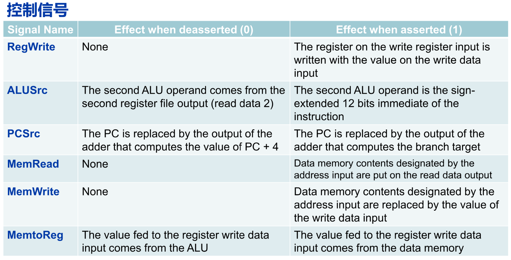
举例：执行一条 add x1, x2, x3 指令
当这条指令进入 CPU 时，控制信号会进行如下编排：
- RegWrite = 1：因为我们需要把结果存入 x1。
- ALUSrc = 0：选择寄存器 x3 作为输入，而不是立即数。
- ALUOp = "Add"：指挥 ALU 做加法运算。
- MemWrite = 0：不写内存。
- MemtoReg = 0：写回寄存器的数据来源于 ALU 结果。

五级流水线结构
这部分是后面的内容，但是可以感受一下在单周期CPU中对指令的处理分别对应哪部分
IF (Instruction Fetch) - 取指阶段
- 核心任务：根据程序计数器（PC）中的地址，从指令存储器中取出机器码。
- 主要部件：PC 寄存器、指令存储器、加法器（用于 PC+4）。
- 控制信号：
- PCSrc：决定下一条指令的地址。是顺序执行（PC+4），还是跳转执行（Branch/Jump 目标地址）。
ID (Instruction Decode) - 译码阶段
- 核心任务：翻译指令的意思；从寄存器堆（Register File）中读取操作数；扩展立即数。
- 主要部件：控制单元（Control Unit）、寄存器堆、立即数生成单元（Imm Gen）。
- 控制信号：
- 这个阶段是控制信号的产源地。控制单元根据指令的
Opcode产生本条指令后续阶段所需的所有信号。
EX (Execute) - 执行阶段
- 核心任务：进行实际的算术逻辑运算、计算访存地址或计算分支跳转目标。
- 主要部件：ALU、分支地址加法器。
- 关键控制信号：
- ALUSrc：选择 ALU 的第二个输入是寄存器数据还是立即数。
- ALUOp：决定 ALU 具体做什么动作（加、减、与、或等）。
MEM (Memory Access) - 访存阶段
- 核心任务：如果是加载指令（Load），则从内存读数据；如果是存储指令（Store），则向内存写数据。
- 主要部件：数据存储器（Data Memory）。
- 关键控制信号：
- MemRead：是否读取内存。
- MemWrite：是否写入内存。
- Branch：结合 ALU 的比较结果，最终触发跳转逻辑。
WB (Write Back) - 写回阶段
- 核心任务：将计算结果或从内存读出的数据写回到寄存器堆中。
- 主要部件：寄存器堆。
- 关键控制信号：
- RegWrite：允许将数据写回目标寄存器（rd）。
- MemtoReg：选择写回的数据来源（是来自 ALU 的运算结果，还是来自内存的读出数据）。
为什么要把 CPU 拆成这五部分？
这种拆分最大的好处就是并行化（Parallelism）。 就像工厂流水线一样：
- 当第一条指令在 WB 级写回时；
- 第二条指令可以在 MEM 级访存；
- 第三条指令可以在 EX 级运算；
- 第四条指令可以在 ID 级译码；
- 第五条指令可以在 IF 级取指。
理想情况下，每个时钟周期都能完成一条指令
2 CPU 结构
这部分我感觉按照cs61c逐步添加部件更好理解
这一段将从支持R型指令的电路开始，为了支持新的指令，逐渐加入新的组件，以及对应的控制信号。
Tip
为了兼容多种指令，我们一般使用添加一个多路选择器MUX，以及添加对应控制信号的方法
R-type

要完成一条 R指令（以add为例），CPU 的数据通路需要经历一个完整的闭环过程：从获取指令地址开始，到最后将计算结果存回寄存器。
完成 R 型指令主要涉及以下五个关键部分：
程序计数器 (PC) 与取指逻辑
- PC 寄存器：保存当前
add指令在内存中的地址。 - PC + 4 加法器：由于单条指令占用 4 个字节，计算出下一条指令的地址（
pc+4）并传回 PC，为下一次取指做准备。
指令存储器 (IMEM)
- 输入：由 PC 提供的地址。
- 输出：读出
add指令的 32 位机器码（即底部的funct7 | rs2 | rs1 | funct3 | rd | opcode）并传送给控制逻辑和寄存器堆。
控制逻辑 (Control Logic)
- 译码：识别出这是一条 R 型指令（通过
opcode）且具体操作是加法（通过funct3和funct7）。 - 信号生成：产生关键的控制信号，例如将 RegWriteEnable (课本上叫RegWrite) 置为 1，允许最终结果写入寄存器。
寄存器堆 (Register File / Reg[])
- 读取操作数：
根据指令中的 Inst[19:15] (rs1) 地址，从 AddrA 读出第一个操作数到 DataA。
根据指令中的 Inst[24:20] (rs2) 地址，从 AddrB 读出第二个操作数到 DataB。
- 准备写入地址：指令中的
Inst[11:7]指定了目标寄存器 rd 的地址，用于最后阶段存放结果。
算术逻辑单元 (ALU)
- 核心运算：接收来自寄存器堆的两个操作数（
Reg[rs1]和Reg[rs2]），并根据控制逻辑的指令执行“加法”运算。 - 结果写回：计算出的结果（
alu输出端）通过数据总线直接绕回到寄存器堆的 DataD 输入端口。在时钟上升沿（clk），由于RegWEn=1，该结果被正式写入到Reg[rd]中。
Note
对于 R 型指令，数据通路是一个纯粹的寄存器到寄存器的过程：
PC \(\rightarrow\) IMEM (取指) \(\rightarrow\) Reg[] (读 \(rs1, rs2\)) \(\rightarrow\) ALU (计算) \(\rightarrow\) Reg[] (写回 \(rd\))
I-type（计算指令）
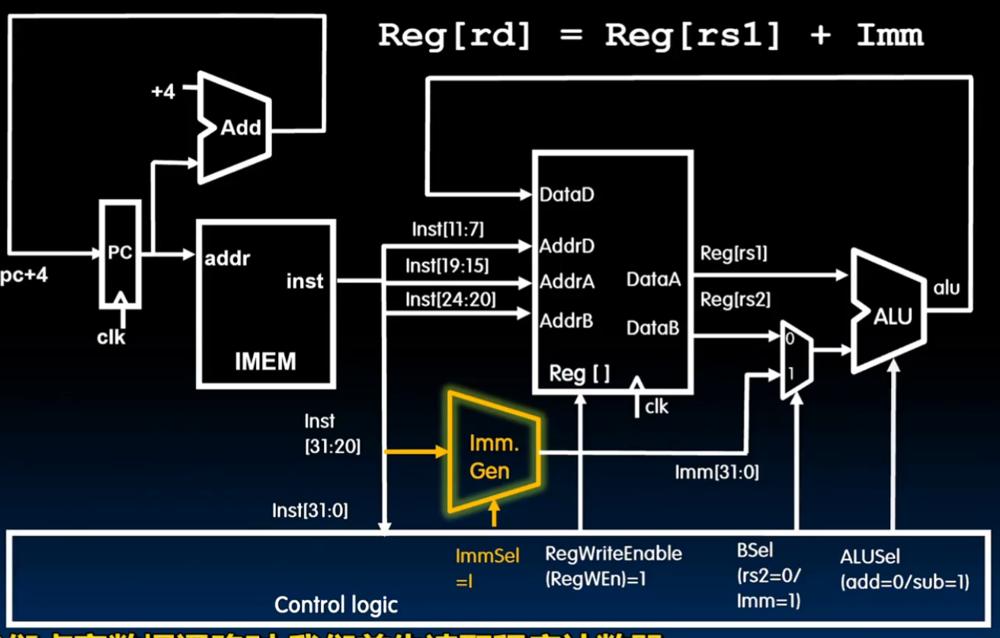
为了能够处理 addi 这类 I型指令（Immediate Type），我们需要在原本支持 R型指令的数据通路上进行扩展。核心挑战在于：I型指令的操作数不再是两个寄存器，而是一个寄存器和一个嵌入在指令中的立即数。
立即数生成器 (Imm. Gen)
这是 I型指令数据通路中最重要的变化。
- 功能：由于 I型指令的机器码（如
Inst[31:20]）中只包含 12 位的立即数，立即数生成器负责提取这些片段，并将其扩展为 32 位（或 64 位）的完整数据，以便 ALU 进行运算。 - 输入/输出：它接收完整的 32 位指令作为输入，并根据指令类型输出扩展后的立即数
Imm[31:0]。
控制逻辑信号
为了指挥硬件在“寄存器模式”和“立即数模式”之间切换，控制逻辑需要增加以下信号：
-
ImmSel (Immediate Select，课本上忽略了此信号)：告知立即数生成器当前指令的类型（例如 I型），以便它从正确的位置提取位段。
-
BSel (ALU Source B Select， 课本上称为ALUSrc)：这是一个关键的多路选择器（MUX）信号。
当 BSel = 0 时，ALU 的第二个输入来自寄存器 rs2（对应 R型指令）。
当 BSel = 1 时，ALU 的第二个输入来自扩展后的立即数 Imm（对应 I型指令）。
Example
以 addi x1, x2, 10 为例，数据流转如下：
-
取指与译码：从 IMEM 取出指令，控制逻辑识别出这是 I型指令，将
ImmSel设为 I，并将BSel设为 1。 -
操作数准备：
从寄存器堆读出 x2 的值（Reg[rs1]）。
Imm. Gen 同步产生立即数 10 的扩展值。
-
ALU 运算：由于
BSel = 1，ALU 接收的是Reg[rs1]和Imm[31:0]。 -
写回：计算结果
Reg[rs1] + Imm通过DataD写回到目标寄存器rd（即x1），此时RegWEn = 1。
I-type Load
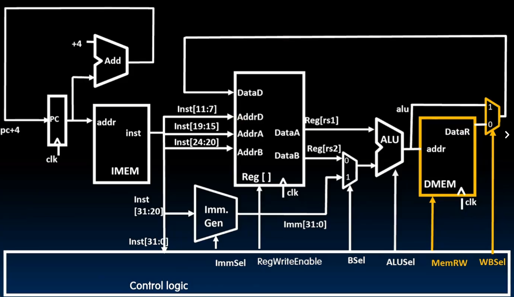
为了支持 I-Type 指令中的 load（例如 lw 指令），我们必须在计算类指令（如 addi）的基础上，打通从 ALU 计算地址 到 内存读取数据，再到 写回寄存器 的完整路径。
我们需要增加以下组件和控制信号：
数据存储器 (DMEM)
在 I-Type 计算指令中，数据流在 ALU 之后直接返回寄存器。但对于 load 指令，ALU 的结果被视为内存地址。
- 数据存储器 (Data Memory / DMEM)：这是 CPU 访问外部数据的接口。
- 连接方式：ALU 的输出连接到 DMEM 的
addr输入端。 - 功能：当执行
lw时，CPU 将 ALU 计算出的目标地址传给 DMEM，DMEM 从该地址读出 32 位数据并从DataR端口输出。
写回选择器 (WB Mux)
寄存器堆（Reg File）的写入端口 DataD 现在面临两个选择：是写入 ALU 的计算结果，还是写入内存读出的数据？
- WB Mux：在 ALU 和 DMEM 之后增加一个多路选择器。
- 功能：它决定了最终写回寄存器的数据源。
控制信号
MemRW (Memory Read/Write)：
- 当执行
load指令时，该信号设为 Read，指示 DMEM 进行读取操作。 - 当执行
store指令时，设为 Write；而对于普通的addi，该信号通常设为无效或读取（取决于设计）。
WBSel (Write Back Select)：
- 这是一个关键的选择信号。
- 对于
addi指令，WBSel = 1（选择 ALU 结果）。 - 对于
lw指令，WBSel = 0（选择从 DMEM 读出的数据）。
lw 指令下的完整数据流 (Load Word)
执行 lw x1, 4(x2) 的通路如下：
- 地址计算：ALU 接收
Reg[x2]和立即数4，计算出内存有效地址。 - 内存访问：
MemRW = Read，DMEM 根据地址取出数据。 - 结果写回：
WBSel = 0使得内存数据通过 Mux 传向DataD。 - 保存：由于
RegWEn = 1，数据在时钟上升沿被存入Reg[x1]。
支持 load 指令的本质是：增加了一个存储器（DMEM）并用一个新的 Mux 重新定义了“写回寄存器”的数据来源。
S-type
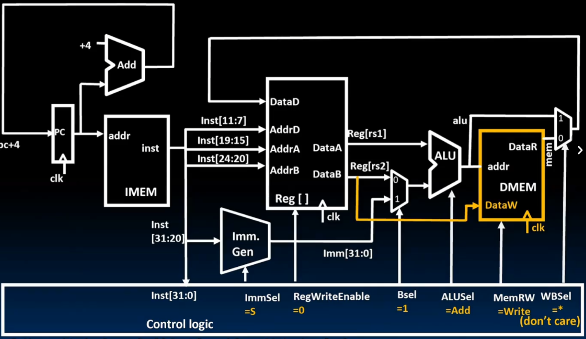
为了支持 S型指令（如 sw，即 Store Word），我们需要在原有的加载指令（lw）数据通路基础上，打通从寄存器到内存的数据传输路径。
支持 sw 指令需要进行以下调整：
数据通路的物理连接：DataB 到 DataW
在执行 sw 指令时，我们需要将寄存器中的数据写入内存，因此必须建立一条从寄存器堆（Reg File）到数据存储器（DMEM）的通路。
- 物理连接：寄存器堆的
DataB端口（输出Reg[rs2]）连接到 DMEM 的DataW输入端口。 - 作用：
rs1和立即数经过 ALU 计算出内存的写入地址（addr），而rs2中的实际数据则通过这条新通路送到内存的待写入数据端。
控制信号的改变
为了指挥硬件执行存储操作而不是读取操作，控制逻辑需要发出不同的指令：
MemRW = Write：
- 这是执行
sw指令的核心信号。 - 它通知 DMEM 这是一个写周期，将
DataW上的数据存入addr指定的地址。
RegWEn = 0：
- 不同于加载或计算指令，
sw指令不修改寄存器。 - 因此，必须将寄存器写使能信号设为
0，防止数据意外写回寄存器堆。
ImmSel = S：
- S型指令的立即数在机器码中的位置与 I型不同。
- 控制信号
ImmSel设为S，指挥立即数生成器（Imm. Gen）按照 S型格式拼接立即数（偏移量）。
WBSel 的特殊性
在执行 sw 时，由于 RegWEn = 0，数据通路末端的 WB Mux 选哪一路都无所谓（Don't Care），因为数据根本不会被写进寄存器。
sw 指令下的完整流向
- 取指与译码：从 IMEM 取指令，控制逻辑识别出
sw，将RegWEn关掉，并将MemRW开向 Write。 - 地址计算：ALU 接收
Reg[rs1]和立即数（S型扩展），计算出目标内存地址。 - 数据传输：寄存器
Reg[rs2]的数据通过DataB支线，直接送达 DMEM 的 DataW。 - 存储动作：在时钟上升沿，数据正式写入内存地址，指令执行完毕。
B-type

为了支持 B-Type 指令（如 beq, bne），数据通路面临最大的挑战是：指令不再是单纯地顺序执行（PC+4），而是要根据比较结果来决定 PC 是跳转到某个目标地址，还是继续执行下一条。
为了实现 B-Type 指令，我们需要增加以下核心组件和控制信号：
核心组件
分支比较器 (Branch Comp / Branch Comparator)：
- 输入：直接接收来自寄存器堆的两个操作数
R[rs1]和R[rs2]。 - 功能：在不经过 ALU 的情况下，快速判断两个数是否相等（Eq）、是否小于（LT）等条件。
PC 选择多路选择器 (PC Mux)：
- 位于 PC 寄存器的输入端。
- 作用：在“PC+4”和“ALU 计算出的跳转目标地址”之间做出选择。
ALU 输入 A 选择器 (Asel Mux)：
- 改变：在 B-Type 指令中，跳转地址是相对于当前 PC 的偏移量（PC-relative），因此 ALU 的第一个输入需要从
Reg[rs1]切换为 PC。
新增的控制信号
控制单元需要通过一套复杂的信号组合来管理跳转逻辑：
- PCSel (taken/not taken)：这是最核心的信号。如果分支条件达成（taken），则选择跳转地址；否则选择 PC+4。
- BrUn (Branch Unsigned)：告知比较器当前进行的是有符号比较还是无符号比较。
- Asel = 1：强制 ALU 选择 PC 作为第一个操作数，以便计算
PC + Offset。 - Bsel = 1：选择立即数生成器产生的 B-Type 立即数 作为 ALU 的第二个操作数。
- ImmSel = B：指挥立即数生成器按照 B-Type 格式提取并扩展指令中的 12 位跳转偏移量。
B-Type 指令的具体执行流 (以 beq 为例)
-
比较逻辑：
Branch Comp接收rs1和rs2，产生BrEq信号给控制逻辑。 -
地址计算：同时，ALU 执行
PC + Imm（此时Asel=1,Bsel=1），算出潜在的跳转目标地址。 -
决策触发：控制逻辑检查
BrEq。
若相等，设置 PCSel = 1 (taken)，PC 在下一个周期变为跳转地址。
若不相等，设置 PCSel = 0 (not taken)，PC 变为正常的 PC+4。
- 状态保护：设置 RegWEn = 0 和 MemRW = read，确保跳转指令不会意外修改寄存器或内存数据。
B-Type 指令的引入使数据通路从“直线型”变为了“带分支的环型”。它通过 Branch Comp 进行决策，通过 ALU 计算目标，最后通过 PCSel 改变整个程序的执行流。
JALR

为了支持 jalr（Jump and Link Register）指令，我们需要让 CPU 具备“跳得远”且“能跳回来”的能力。与 beq 指令不同，jalr 的跳转目标不是基于 PC 的相对偏移，而是基于寄存器的绝对地址。
支持 jalr 需要添加或调整以下组件和信号：
核心功能的改变：计算跳转目标
jalr rd, offset(rs1) 的功能是将 PC 设置为 Reg[rs1] + offset。
数据通路调整：
- ALU 的输入 A：必须选回 Reg[rs1]（即
Asel = 0）。 - ALU 的输入 B：选择扩展后的立即数（即
Bsel = 1）。 - 最终目标：ALU 计算出的结果（
Reg[rs1] + offset）会被直接送往 PC Mux，用于更新 PC。
“Link”功能的实现：保存返回地址
jalr 中的 "Link" 意味着我们需要把“下一条指令的地址”（即 PC + 4）存入目标寄存器 rd（通常是 ra 寄存器），以便函数执行完后能跳回来。
- 新增组件/连接：我们需要建立一条从 PC + 4 加法器 到 WB Mux（写回选择器） 的通路。
- WB Mux 扩展：原本的 WB Mux 只有两个输入（ALU 结果和 Memory 结果），现在需要增加第三个输入端，专门接收 PC + 4。
新增/调整的控制信号
为了指挥这一系列复杂的动作，控制逻辑需要做出如下配置：
- WBSel = 2 (或相应索引)：指挥 WB Mux 选择 PC + 4 作为写回数据。这样，虽然 ALU 在算跳转地址，但最后写进寄存器堆的数据是返回地址。
- PCSel = 1 (Jump)：强制 PC 选择来自 ALU 输出的跳转地址，而不是 PC + 4。
- ImmSel = I：jalr` 虽然是跳转指令，但它的编码格式其实是 I-Type（因为它需要一个 rs1 和一个 12 位立即数）。
- RegWEn = 1：因为要保存返回地址到
rd，所以寄存器写使能必须开启。
jalr 执行流总结
- 算目标：ALU 计算
Reg[rs1] + Imm，并将此值通过PCSel信号拨给 PC。 - 存返回：此时
PC + 4的值顺着新加的通路，通过WBSel选择器。 - 写寄存器：由于
RegWEn = 1，PC + 4被存入目标寄存器rd。
jal 与 jalr 的微小区别
jal(J-Type)：跳转目标是PC + Offset。jalr(I-Type)：跳转目标是Reg[rs1] + Offset。- 共同点：都要通过 WB Mux 把 PC + 4 塞回寄存器堆。
J-type
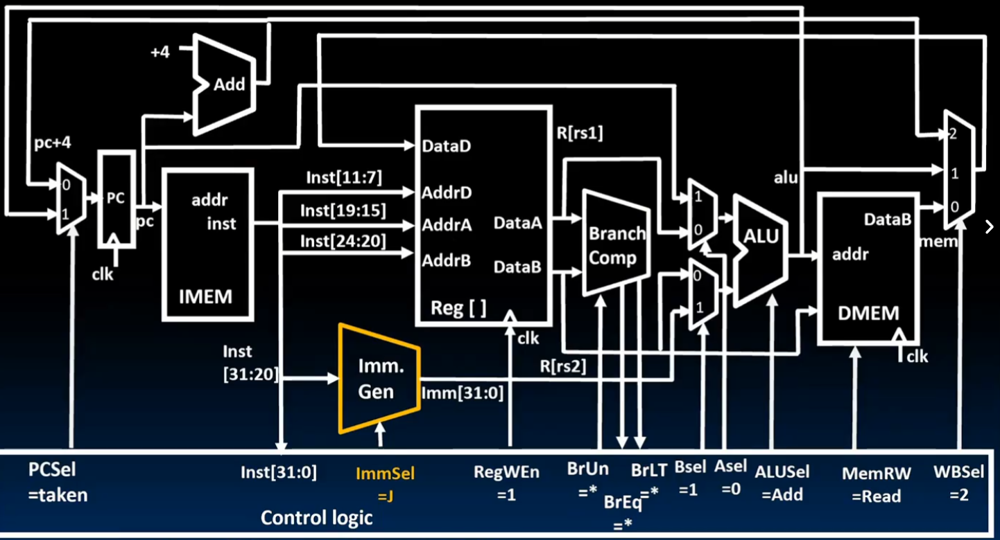
为了支持 JAL (Jump and Link) 指令，数据通路需要在 B-Type 分支指令的基础上进行关键调整，以实现“无条件远程跳转”并“保存返回地址”的双重功能。
支持 jal 指令主要进行了以下改变：
核心功能的改变：计算跳转目标
jal rd, offset 指令会将 PC 设置为当前 PC + offset。
- ALU 输入 A 的调整：与 B-Type 指令一致，ALU 的第一个输入端需要通过 Asel Mux 选择 PC（即
Asel = 1）。 - ALU 输入 B 的调整：通过 Bsel Mux 选择来自立即数生成器（Imm. Gen）的跳转偏移量（即
Bsel = 1）。 - 立即数扩展：控制信号 ImmSel 设置为 J，指挥立即数生成器按照 J-Type 格式拼接 20 位的跳转偏移量。
“Link”功能的实现：保存返回地址
这是 jal 与分支指令最大的区别——它必须把跳转后的“返回地址”（即当前指令的下一条地址 PC + 4）存入目标寄存器 rd。
- 建立 PC+4 路径：数据通路中建立了一条从 PC + 4 加法器 直接连向 WB Mux（写回选择器） 的支线（JALR图中橙色高亮线路）。
- WB Mux 扩展：写回多路选择器增加了一个输入端口（输入端 2），专门接收这个 PC + 4 的值。
控制信号的配置
为了完成上述逻辑，控制单元（Control Logic）发出了以下指令：
- PCSel = taken：无条件强制 PC 选择来自 ALU 计算出的跳转目标地址。
- RegWEn = 1：开启寄存器写使能，因为需要将返回地址写入寄存器堆。
- WBSel = 2：指挥 WB Mux 忽略 ALU 的运算结果，而是选择输入端 2 上的 PC + 4 写回寄存器
rd。 - MemRW = Read：保持内存为读取状态（不修改内存）。
jal 执行流总结
- 跳转目标：ALU 计算
PC + Offset，结果直接传给 PC。 - 保存现场：同时，
PC + 4的值顺着橙色路径传到 WB Mux。 - 写回 Link：由于
WBSel = 2且RegWEn = 1，这个返回地址在时钟上升沿被存入目标寄存器（通常是ra），完成函数调用的准备工作。
支持 jal 的关键在于：复用 ALU 计算 PC 相对地址，并新增一条将 PC+4 绕回寄存器堆的“快速通道”。
U-type
没啥好说，把立即数生成器添加一个U-type模式
3 Pipeline
进入流水线（Pipelining）的学习，意味着我们从“原理”跨向了“性能优化”。流水线的五个部分在前面已经有介绍，包括IF,ID,EX,MEM,WB。
为什么要使用流水线？
在单周期 CPU 中，时钟周期由最慢的一条指令（通常是 lw）决定。无论简单的 add 还是复杂的 lw，都必须等一整个周期，这导致了严重的硬件闲置。
流水线的核心目标是提高吞吐量（Throughput），即单位时间内完成的指令数。
- 并行工作：将指令处理分为多个阶段（如 IF, ID, EX, MEM, WB），让不同的硬件部分同时处理不同的指令。
- 缩短周期：由于每个阶段的电路变得简单，时钟频率可以大幅提升。
- 类比：就像洗衣服。与其等一桶衣服洗完、烘干、叠好再洗下一桶，流水线方式是第一桶进烘干机时，第二桶就进洗衣机。
三大冒险 (Hazards)
流水线虽然快，但由于多条指令同时在跑，会产生各种冲突，这些冲突被称为冒险。
A. 结构冒险 (Structural Hazards)
- 原因：多条指令在同一时刻争抢同一个物理硬件资源。
- 例子：如果指令存储器（IMEM）和数据存储器（DMEM）合二为一。取指阶段（IF）要读它，访存阶段（MEM）也要读它，此时就会撞车。
- 解决方法：增加资源。例如采用哈佛架构，将指令和数据存储器分开。
B. 数据冒险 (Data Hazards)
- 原因：指令需要的数据还没有被前面的指令写回寄存器。
- 例子：
add x1, x2, x3（在第 5 阶段 WB 才会写回 x1）sub x4, x1, x5（在第 2 阶段 ID 就需要读 x1）- 解决方法：
- 旁路/前推 (Forwarding/Bypassing)：不等写回寄存器，直接从 EX 或 MEM 阶段把结果“拉”到后面指令的输入端。
- 阻塞 (Stall)：如果数据还没算出来（如
lw后紧跟add），硬件必须停一拍，产生一个“空泡”（Bubble）。
C. 控制冒险 (Control Hazards)
- 原因：处理器在还没确定分支跳转（如
beq）是否成功前，就已经把后面的指令取进来了。 - 后果：如果最后发现要跳转，那么已经取进来的后续指令就是错的，必须全部作废（Flush）。
- 解决方法：
- 分支预测 (Branch Prediction)：预测跳还是不跳。
- 延迟分支 (Delayed Branch)：编译器调整指令顺序，放一条总是需要执行的指令在跳转后面。
数据冒险
在流水线设计中，数据冒险（Data Hazard）是最常见的性能瓶颈。当一条指令依赖于前面尚未完成写回指令的结果时，冒险就会发生。
什么是数据冒险？
数据冒险源于指令间的数据依赖。例如：
-
add x19, x0, x1：在第5阶段（WB）才将结果写入x19。 -
sub x2, x19, x3：在第2阶段（ID）就需要读取 x19。
如果不加处理，sub 指令会读到 x19 的旧值，导致逻辑错误。

使用前推（Forwarding/Bypassing）解决
前推的核心思想是：一旦结果被计算出来，就立即投入使用，而不必等待它存入寄存器。
- 实现原理：在数据通路中增加额外的连接。
- 具体路径：
- EX到EX前推：将
add指令在 EX 阶段计算出的结果，直接拉回到下一条指令的 ALU 输入端。 - MEM到EX前推：如果依赖项隔了一条指令，则从 MEM 阶段的结果前推回 EX 阶段。

前推的局限性：Load-Use 冒险
前推并不能解决所有数据冒险，典型的例外是 Load-Use 数据冒险。
-
冲突点：
ld x1, 0(x2)指令的数据直到 MEM 阶段结束才从内存中取回。 -
无法前推的原因：如果紧跟的指令
sub x4, x1, x5在 EX 阶段就需要这个值，那么前推线必须“穿越时空”回到过去，这在物理上是不可能的。 -
硬件对策：阻塞（Stall/Bubble）：
硬件会自动检测到这种冲突，并强行让 sub 指令及其后的指令停止一拍，产生一个“空泡（Bubble）”，直到 ld 结果可用。

通过代码调度（Code Scheduling）消除阻塞
除了硬件上的努力，编译器或程序员可以通过重排指令顺序来避免阻塞，从而提高程序运行效率。
- 策略：在
load指令和使用该结果的指令之间插入不相关的指令。 - 实例对比：
- 未优化代码：指令紧跟依赖项，触发 2 次阻塞（Stall），共消耗 13 个周期。
- 优化后的代码：将其他的
ld指令穿插在计算指令中间，消除了所有阻塞，仅需 11 个周期 即可完成相同任务。
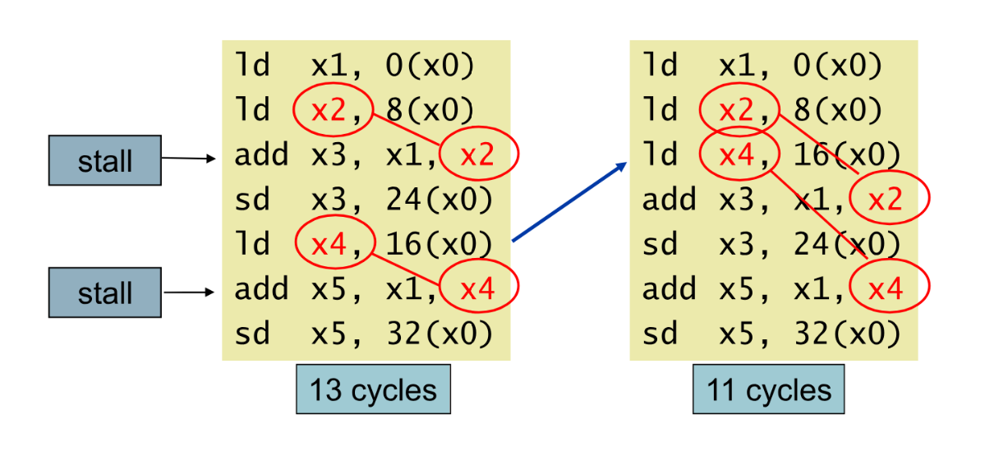
总结：前推解决了大部分运算指令间的冒险，但对于 load 指令，硬件必须通过阻塞来等待数据。而最极致的优化方案是利用代码调度，让流水线始终保持满载。
控制冒险
在流水线中，控制冒险（Control Hazard）是指处理器在根据分支指令（如 beq, bne, jal）确定下一条指令的地址之前，就已经将后续指令取入流水线的现象。如果分支跳转成功，那么已经进入流水线的指令就是错误的，必须被废弃，这会导致性能损失。
为什么会产生控制冒险？
在五级流水线中，分支决策通常在 ID（译码） 或 EX（执行） 阶段才能做出。
- 延迟效应：当
beq指令在执行时，由于流水线的重叠，后续的一到两条指令可能已经处于取指（IF）或译码（ID）阶段了。 - 路径错误：如果最终决定跳转，流水线里这些“不该出现”的指令就会造成错误执行。
解决方案：硬件与软件的配合
针对控制冒险，业界主要有以下几种解决方法：
A. 流水线阻塞 (Stalling / Bubble)
- 原理：最简单粗暴的方法。一旦检测到分支指令，流水线立刻“停一拍”或“停两拍”，直到分支结果确定。
- 缺点：这会产生明显的“空泡”（Bubble），降低了流水线的吞吐量。
B. 分支预测 (Branch Prediction)
这是现代 CPU 提高效率的核心技术：
- 静态预测：简单假设。例如，假设所有的分支都“不跳转”（Predict Not Taken）。如果猜对了，流水线全速前进；如果猜错了，则丢弃（Flush）错误指令并重新取指。
- 动态预测：硬件维护一个“分支历史表”。根据该指令过去跳没跳，来预测这次跳不跳。
C. 缩短分支延迟 (Reducing Branch Delay)
- 优化策略：将分支结果的判断逻辑从 EX 阶段提前到 ID 阶段。
- 效果：这样可以将猜错时的损失从 2 个周期减少到 1 个周期。
D. 延迟分支 (Delayed Branch)
- 原理：这是一种软件/编译器方案。编译器会在分支指令后面放置一条无论跳转与否都要执行的有用指令（Slot）。
- 现状：这种方法在早期的 MIPS 架构中很流行，但在追求超深流水线的现代处理器中已不多见。
指令清除 (Flushing)
当预测失败时，硬件必须执行“清除”动作：
- 将 IF、ID 阶段中由于错误预测而取进来的指令控制信号全部置为 0（变成
nop指令）。 - 重新根据正确的目标地址更新 PC 值。
4流水线中的控制信号
在流水线（Pipeline）架构中，处理不同指令具有不同控制信号问题的核心方法是：将控制信号随指令一起“流动”，并利用流水线寄存器（Pipeline Registers）进行同步。
以下是详细的实现逻辑：
控制信号的集中生成
在五级流水线中，控制信号是在 ID（译码）阶段 一次性生成的。
- 译码器（Control Unit） 根据指令的操作码（Opcode）和功能位（Funct），生成该指令在后续所有阶段（EX, MEM, WB）所需的全部开关信号。
- 由于每一时刻流水线里有 5 条不同的指令，如果直接全局控制，信号就会互相打架。
控制信号的“随存随行”
为了解决不同指令信号不同的问题，硬件在每一级流水线之间加入了流水线寄存器（如 IF/ID, ID/EX, EX/MEM, MEM/WB）。
- 数据通路与控制通路并行：流水线寄存器不仅存储数据（如寄存器值、地址），还专门开辟了空间来存储控制信号总线。
- 同步移动：当一条指令从 ID 进入 EX 阶段时，它所属的控制信号也会从 ID/EX 寄存器同步搬移到 EX/MEM 寄存器。这确保了信号与指令在物理位置上始终对齐。
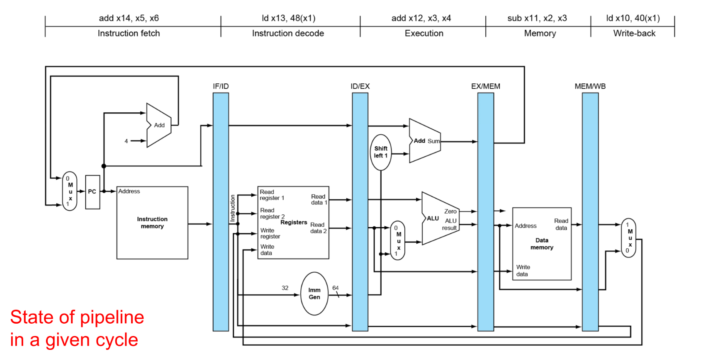
按阶段“拆包”使用
控制信号并不是在某一瞬间全部起作用，而是根据指令所处的阶段按需取用：
| 流水线阶段 | 使用的控制信号示例 | 信号去向 |
|---|---|---|
| EX (执行) | ALUSrc, ALUOp | 驱动 ALU 及其输入多路选择器 |
| MEM (访存) | MemRead, MemWrite, Branch | 驱动数据存储器和分支跳转逻辑 |
| WB (写回) | RegWrite, MemtoReg | 传递到流水线最末端，控制结果写回寄存器堆 |
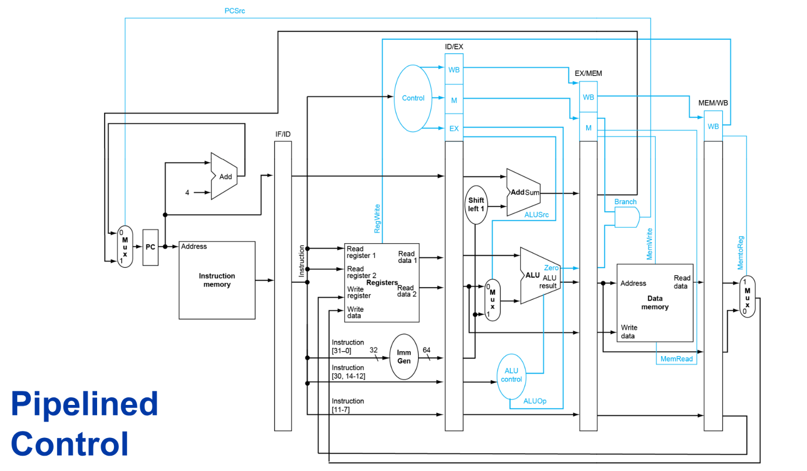
解决“写回阶段”的特殊挑战
WB 信号是处理中最特殊的一环。
- 问题：指令在 WB 阶段才需要修改寄存器，但此时该指令已经运行到流水线的最后一级，而控制单元还在第一级忙着译码新指令。
- 解法：WB 级的信号（如
RegWrite）必须一直存放在流水线寄存器中，伴随指令走完 EX 和 MEM，最后才在 WB 阶段释放，控制目标寄存器的写入。
异常情况处理：信号清零（Flush）
当发生控制冒险（如分支预测失败）时，流水线需要清除错误的指令：
- 硬件会将 ID/EX 寄存器中的所有控制信号强制置为 0。
- 这本质上是将这条指令变成了一条 nop（空操作），因为它不再具有任何写内存（MemWrite=0）或写寄存器（RegWrite=0）的能力，从而保护了状态不被破坏。
前推的控制信号
前推（Forwarding）逻辑的本质，其实是一个实时运行的“地址比对器”。它的任务是在每一条指令执行时，观察后面阶段的指令是否会产生它现在需要的数据。
为了实现自动化前推，我们需要引入一个专门的硬件单元：前推单元（Forwarding Unit）。
比对逻辑：谁需要？谁拥有
前推单元通过不断比对寄存器编号来做出决策：
- 需求方：当前处于 EX阶段 的指令，其操作数寄存器编号为
rs1和rs2。 - 供给方：
- 处于 MEM阶段 的指令，其目标寄存器编号为
EX/MEM.RegisterRd。 - 处于 WB阶段 的指令，其目标寄存器编号为
MEM/WB.RegisterRd。
触发前推的条件
前推单元会检查以下条件。如果成立，就立刻拨动 ALU 前端的多路选择器（MUX）：
情况 A：从 MEM 阶段前推（最快路径）
如果 EX/MEM.RegWrite 为真（说明前序指令要写回），且 EX/MEM.RegisterRd 等于当前指令的 rs1 或 rs2，则触发前推。
逻辑：数据还没进内存或寄存器，直接从 ALU 输出口拉回输入口。
情况 B：从 WB 阶段前推（稍远的路径）
MEM/WB.RegWrite 为真，且 MEM/WB.RegisterRd 等于当前指令的 rs1 或 rs2。
逻辑：数据刚从内存读出或刚从 ALU 传到写回级，赶在写进寄存器堆之前截获它。
修改 Mux 信号：三选一
为了支持前推，ALU 的两个输入端（A 和 B）各自增加了一个 3 选 1 多路选择器。其控制信号（如 ForwardA）的取值含义如下：
- 00：正常路径。使用从寄存器堆读出的原始值。
- 10：来自 MEM 级的前推。使用前一条指令在 ALU 算出的结果。
- 01：来自 WB 级的前推。使用前前条指令的结果。
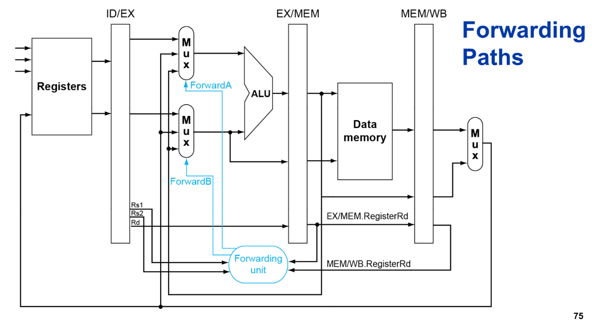
Load Use控制信号
当“前推（Forwarding）”逻辑发现数据无法通过物理连线及时送到时，就需要冒险检测单元（Hazard Detection Unit）介入。Load-Use 冒险之所以特殊，是因为数据是从内存中读取的，它在流水线中产生的时刻太晚，无法满足紧随其后的指令在 EX 阶段的需求。
以下是硬件如何检测并处理这种“即便前推也救不回来”的情况：
硬件检测的触发逻辑
冒险检测单元位于 ID（译码）阶段。它会像监视器一样，通过对比当前指令和上一条指令的寄存器使用情况来判断是否需要“刹车”。
检测条件（伪代码逻辑）：
当满足以下所有条件时，判定为 Load-Use 冒险：
- 前一条指令（处于 EX 阶段）是 Load 指令：其控制信号
ID/EX.MemRead为真。 - 数据存在依赖关系：前一条指令的目标寄存器
ID/EX.RegisterRd等于当前指令（处于 ID 阶段）的源寄存器IF/ID.RegisterRs1或IF/ID.RegisterRs2。

处理冒险的三大动作：阻塞（Stalling）
一旦检测到上述条件，硬件会强行让流水线进入“待机”状态。为了让 Load 指令能够跑完 MEM 阶段拿到数据，检测单元会同步执行以下三个动作：
- 停在原地（IF/ID 保持不变）：
禁止 IF/ID 流水线寄存器更新。这意味着当前正在译码的指令（需要数据的指令）会在 ID 阶段停留一个周期。
- 不取新指（PC 保持不变）：
禁止程序计数器（PC）自增。这保证了流水线最前端不会取进新的指令。
- 注入“空泡”（Bubble/NOP）：
将 ID/EX 流水线寄存器中的所有控制信号清零（如 RegWrite=0, MemWrite=0）。这相当于在流水线中间插入了一个 NOP（空操作），它会随着时钟周期向后流动，直到自然消失。
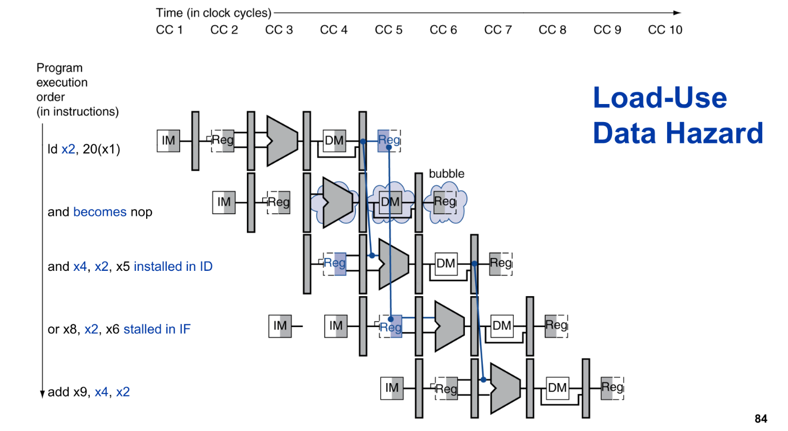
时间轴上的变化
- 不阻塞的情况：指令 2 会尝试在指令 1 的 MEM 阶段之前就使用数据，导致错误。
- 阻塞之后：指令 2 被向后推迟了一个时钟周期。此时，指令 1 已经完成了 MEM 阶段（数据已准备好），现在可以通过正常的前推逻辑将数据直接送到指令 2 的 ALU 输入端了。
分支中的冒险
在分支指令（B-Type）中，数据冒险和控制冒险往往是交织在一起的。由于分支指令需要比较两个寄存器的值来决定是否跳转，如果这两个寄存器的值还没有被前面的指令写回，就会产生数据冒险。
分支指令中的数据冒险 (Data Hazard in Branches)
为了减少控制冒险带来的损失，现代流水线通常将分支比较逻辑（Branch Comparator）提前到 ID（译码）阶段。但这会带来更严峻的数据依赖问题：
- 冲突点：分支指令在 ID 阶段就需要寄存器的值进行比较，而前序指令可能还在 EX 或 MEM 阶段。
- 解决方案：
- 前推 (Forwarding)：如果前序指令是 ALU 运算，数据可以从 EX/MEM 或 MEM/WB 级前推到 ID 级的比较器输入端。
- 阻塞 (Stall)：如果前序指令是
load且紧跟分支，或者前序 ALU 指令的结果还没算出来，流水线必须在 ID 阶段阻塞，直到数据就绪。
分支预测 (Branch Prediction)
为了不让流水线频繁阻塞，CPU 会“猜测”分支是否跳转。
1-bit 动态分支预测 (1-bit Predictor)
这是最简单的动态预测机制，它使用一个位（Bit）来记录该分支上一次执行的情况。
- 逻辑：如果上次跳了（Taken），这次就猜跳；如果上次没跳（Not Taken），这次就猜不跳。
- 缺点：在循环（Loop）结构中表现不佳。例如，一个执行 10 次的循环，在最后一次退出循环和下一次重新进入循环时，它都会猜错。这种“双倍错误”会导致流水线频繁清空。
动态分支预测 (2-bit Predictor)
为了解决 1-bit 预测器的灵敏度过高问题，引入了 2-bit 饱和计数器。它像是一个有“记性”的开关，只有当分支连续两次改变方向时，预测器才会改变它的预测倾向。
它有四个状态：
- Strongly Taken (11)：极力预测跳转。
- Weakly Taken (10)：倾向跳转，如果错一次，转为弱不跳。
- Weakly Not Taken (01)：倾向不跳转。
-
Strongly Not Taken (00)：极力预测不跳转。
-
优势：它能够容忍偶尔的反向操作。例如在循环结束时，它只会猜错一次，而不会立即改变对下一次循环启动时的预测倾向。
预测失败后的处理：Flush
无论预测器多么聪明，总会有猜错的时候。一旦在 ID 或 EX 阶段发现实际结果与预测不符，控制逻辑必须：
- 清空流水线 (Flush)：将 IF、ID 级中错误的指令变成
nop（空操作）。 - 修正路径：从正确的分支目标地址重新取指。
5 Exception
在流水线中处理异常（Exception）或中断（Interrupt）是非常棘手的，因为它打破了指令顺序执行的平滑性。你可以把异常看作是一种特殊的“硬件触发的分支”。
处理流水线异常的核心挑战在于精确异常（Precise Exception）：即使多条指令在并行，也要保证在异常指令之前的指令全部执行完，而之后的指令好像从未发生过一样。
异常的检测与保存
异常可能发生在流水线的任何一个阶段。流水线并不会在检测到异常时立刻停下所有动作，而是采取“标记并后传”的策略：
- IF 阶段：发生访存错误（如指令地址越界、页故障）。
- ID 阶段：检测到非法指令。
- EX 阶段：发生算术溢出。
- MEM 阶段：数据访存错误（如
lw读取了非法地址）。
处理方式：硬件会在该指令对应的流水线寄存器中添加一个“异常状态位”（Exception Status Register），记录发生了什么异常。这条指令会带着这个“地雷”标记继续向后流动。
异常的正式处理
只有当这条带有异常标记的指令到达 WB（写回）阶段（或在某些设计中是 MEM 阶段）时，控制逻辑才会正式触发异常处理程序。
为什么要等？
为了防止“误杀”。比如指令 A 发生了溢出异常，但它前面有一条指令 B 还没执行完。如果我们立刻处理异常，可能会破坏 B 的执行。只有等到 A 成为流水线中最老的那条指令时，处理它才是安全的。
处理异常的三大动作：Flush, Save, Jump
一旦决定处理异常，控制逻辑会执行以下操作：
- 清空流水线 (Flush)：
- 将异常指令及其后面所有指令（处于 IF, ID, EX, MEM 阶段的）的控制信号全部清零。
- 这保证了发生错误的指令不会修改寄存器或内存。
- 保存状态 (Save Context)：
- 将被中断指令的地址存入特殊的寄存器（在 RISC-V 中通常是 sepc）。
- 记录异常原因（存入 scause）。
- 跳转到异常向量表 (Jump to Vector Table)：
- 将 PC 设置为异常处理程序（Handler）的起始地址，开始执行操作系统定义的错误处理逻辑。
Tip
异常与控制冒险的相似性
你会发现，处理异常的逻辑和处理分支预测失败（控制冒险）极其相似：
- 都需要 Flush 掉后续指令。
- 都需要 改变 PC 的流向。
- 区别在于：分支是程序主动的跳转，而异常是被动、突发的“意外”。